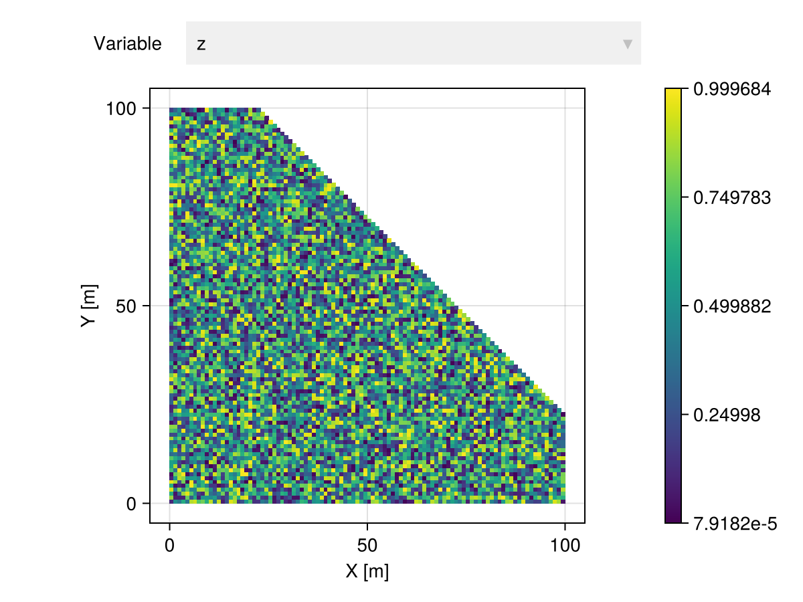
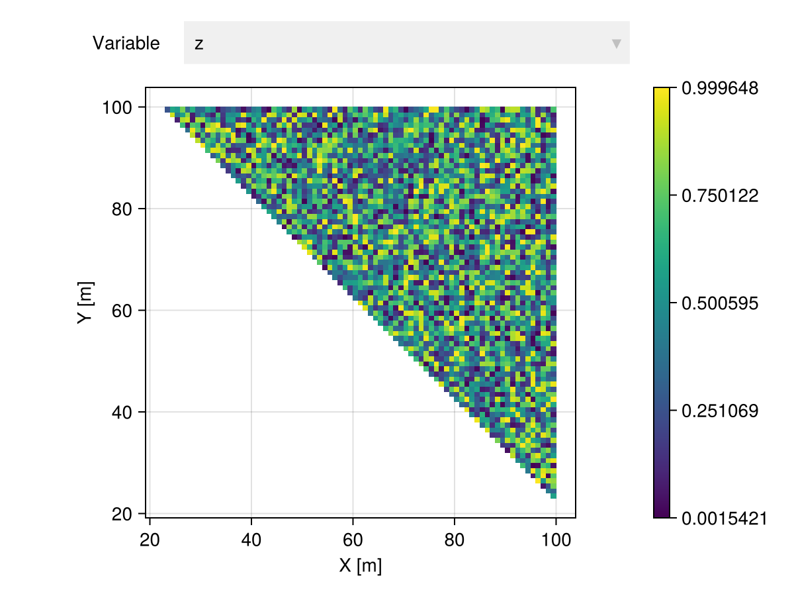

Partitioning
Overview
It is often useful to group geospatial data based on geometric criteria, instead of statistical criteria in Clustering methods. We provide various partitioning methods for geotables or domains via the partition function:
Meshes.partition — Function
partition([rng], object, method)Partition object with partition method. Optionally, specify random number generator rng.
Meshes.PartitionMethod — Type
PartitionMethodA method for partitioning domain/data objects.
We illustrate this concept with the BisectFractionPartition method:
# random image with 100x100 pixels
gtb = georef((; z=rand(100, 100)))
# 70%/30% partition perpendicular to (1.0, 1.0) direction
Π = partition(gtb, BisectFractionPartition((1.0, 1.0), fraction=0.7))2 Partition
├─ 6997×2 SubGeoTable over 6997 view(::CartesianGrid, [1, 2, 3, 4, ..., 9920, 9921, 9922, 9923])
└─ 3003×2 SubGeoTable over 3003 view(::CartesianGrid, [2400, 2499, 2500, 2598, ..., 9997, 9998, 9999, 10000])The result of a partitioning method is a lazy indexable collection of geotables or domains:
Π[1] |> viewer
Π[2] |> viewer
In this specific example, we could have used the geosplit utility function, which simplifies the syntax further:
GeoStatsBase.geosplit — Function
geosplit(object, fraction, [normal])Split geospatial object into two parts where the first part has a fraction of the elements. Optionally, the split is performed perpendicular to a normal direction.
geosplit(gtb, 0.7, (1.0, 1.0))2 Partition
├─ 6997×2 SubGeoTable over 6997 view(::CartesianGrid, [1, 2, 3, 4, ..., 9920, 9921, 9922, 9923])
└─ 3003×2 SubGeoTable over 3003 view(::CartesianGrid, [2400, 2499, 2500, 2598, ..., 9997, 9998, 9999, 10000])Methods
Uniform
Meshes.UniformPartition — Type
UniformPartition(k; shuffle=true)A method for partitioning objects uniformly into k subsets of approximately equal size. Optionally shuffle the data.
Fraction
Meshes.FractionPartition — Type
FractionPartition(fraction; shuffle=true)A method for partitioning objects according to a given fraction. Optionally shuffle elements before partitioning.
Block
Meshes.BlockPartition — Type
BlockPartition(sides; neighbors=false)A method for partitioning objects into blocks of given sides. Optionally, compute the neighbors of a block as the metadata.
BlockPartition(side₁, side₂, ..., sideₙ; neighbors=false)Alternatively, specify the sides side₁, side₂, ..., sideₙ.
Bisect-Point
Meshes.BisectPointPartition — Type
BisectPointPartition(normal, point)A method for partitioning objects into two half spaces defined by a normal direction and a reference point.
The first half space contains elements to the "left" of the bisecting plane, while the second half space contains elements to the "right" of the bisecting plane.
Bisect-Fraction
Meshes.BisectFractionPartition — Type
BisectFractionPartition(normal; fraction=0.5, maxiter=10)A method for partitioning objects into two half spaces defined by a normal direction and a fraction of points. The partition is returned within maxiter bisection iterations.
Ball
Meshes.BallPartition — Type
BallPartition(radius; metric=Euclidean())A method for partitioning objects into balls of a given radius using a metric.
Plane
Meshes.PlanePartition — Type
PlanePartition(normal; [tol])A method for partitioning objects into a family of hyperplanes defined by a normal direction. Two points pᵢ and pⱼ belong to the same hyperplane when (pᵢ - pⱼ) ⋅ normal < tol.
Direction
Meshes.DirectionPartition — Type
DirectionPartition(direction; [tol])A method for partitioning objects along a given direction with bandwidth tolerance tol.
IndexPredicate
Meshes.IndexPredicatePartition — Type
IndexPredicatePartition(pred)A method for partitioning objects with a given predicate function. Two linear indices i and j are part of the same subset whenever pred(i, j) == true
PointPredicate
Meshes.PointPredicatePartition — Type
PointPredicatePartition(pred)A method for partitioning objects with a given point predicate function. Two points pᵢ and pⱼ are part of the same subset whenever pred(pᵢ, pⱼ) == true.
Product
Meshes.ProductPartition — Type
ProductPartition(first, second)A method for partitioning objects using the product of first and second partitioning methods.
Hierarchical
Meshes.HierarchicalPartition — Type
HierarchicalPartition(first, second)A partitioning method in which a first partition is applied and then a second partition is applied to each subset of the first.